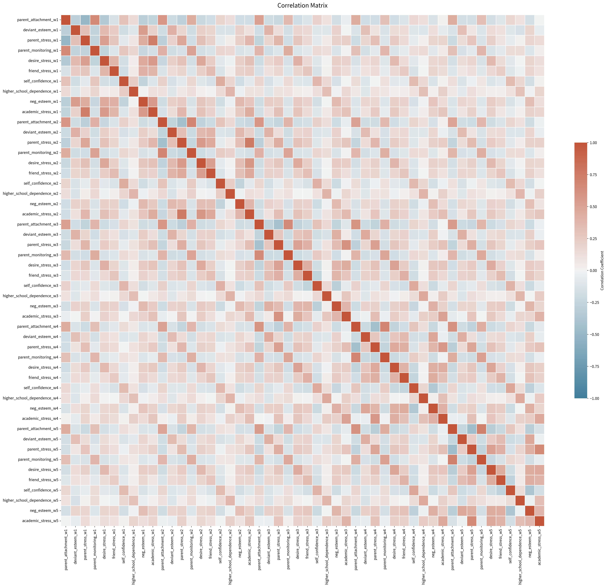
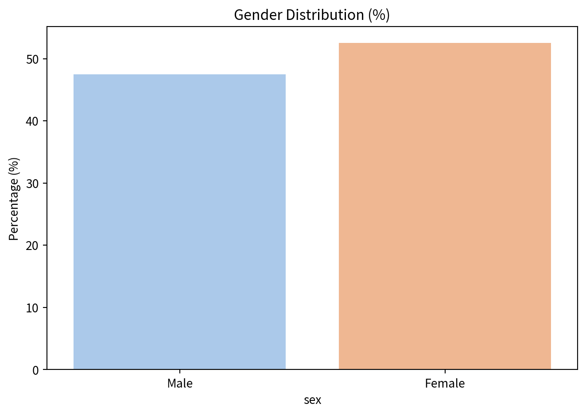
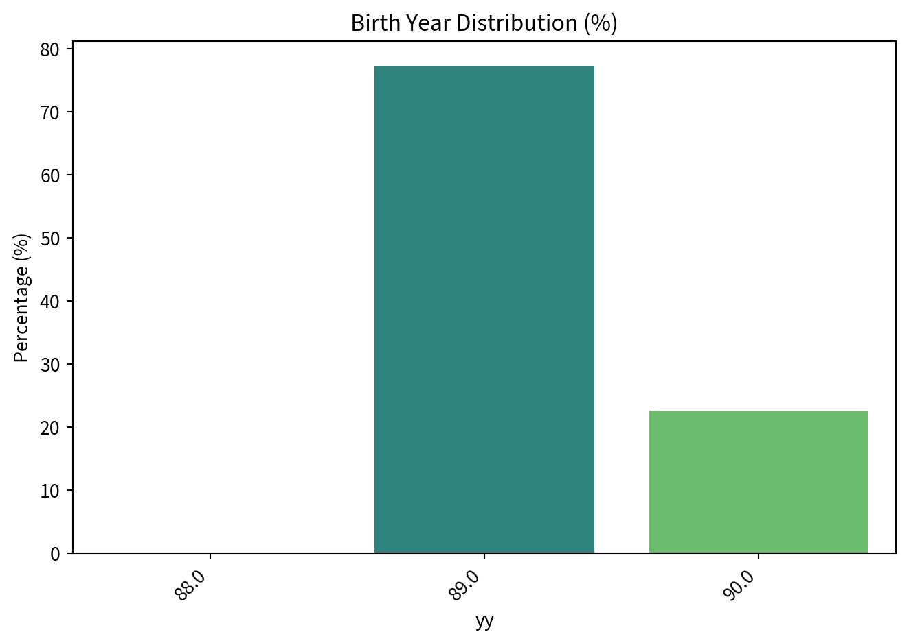
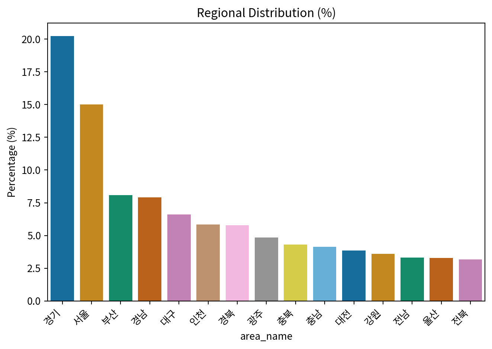
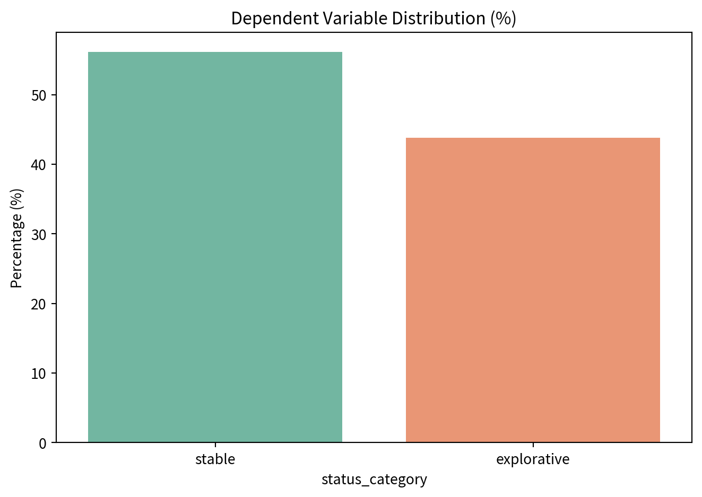

import pandas as pd
import numpy as np
from sklearn.model_selection import train_test_split
from sklearn.metrics import classification_report
from sklearn.preprocessing import StandardScaler
import matplotlib.pyplot as plt
from matplotlib import font_manager, rc
import seaborn as sns
import warnings
warnings.filterwarnings("ignore")
ID_VAR = "id"
WEIGHT_VAR = "wt2"
OUTCOME_VAR = "status_category"
RANDOM_STATE = 54321
target_pred_var = [ID_VAR, "wt1", "q33a01", "q33a02", "q33a03", "q33a04", "q33a05", "q33a06",
"q48a07", "q48a08", "q48a09", "q48a10",
"q49a01", "q49a02", "q49a03", "q49a04",
"q33a07", "q33a08", "q33a09",
"q49a15", "q49a16", "q49a17",
"q49a09", "q49a10", "q49a11",
"q48b1", "q48b2", "q48b3",
"q12a01", "q12a02", "q12a03",
"q48a04", "q48a05", "q48a06",
"q49a05", "q49a06", "q49a08"]
cfa_model = """
# 1. 부모애착
parent_attachment =~ q33a01 + q33a02 + q33a03 + q33a04 + q33a05 + q33a06
# 2. 일탈적 자아 낙인
deviant_esteem =~ q48a07 + q48a08 + q48a09 + q48a10
# 3. 부모에 의한 스트레스
parent_stress =~ q49a01 + q49a02 + q49a03 + q49a04
# 4. 부모감독
parent_monitoring =~ q33a07 + q33a08 + q33a09
# 5. 물질적 요인으로 인한 스트레스
desire_stress =~ q49a15 + q49a16 + q49a17
# 6. 친구로 인한 스트레스
friend_stress =~ q49a09 + q49a10 + q49a11
# 7. 자기신뢰감
self_confidence =~ q48b1 + q48b2 + q48b3
# 8. 상급학교 의존도
higher_school_dependence =~ q12a01 + q12a02 + q12a03
# 9. 부정적 자아존중감
neg_esteem =~ q48a04 + q48a05 + q48a06
# 10. 학업으로 인한 스트레스
academic_stress =~ q49a05 + q49a06 + q49a08
"""
df1_origin = pd.read_csv('_data/student_1.csv')
df2_origin = pd.read_csv('_data/student_2.csv')
df3_origin = pd.read_csv('_data/student_3.csv')
df4_origin = pd.read_csv('_data/student_4.csv')
df5_origin = pd.read_csv('_data/student_5.csv')
df6_origin = pd.read_csv('_data/student_6.csv')
df_origin = [df1_origin, df2_origin, df3_origin, df4_origin, df5_origin]preprocessing
data mining

Data Load
CFA (Confirmatory Factor Analysis)
import rpy2.robjects as ro
from rpy2.robjects.packages import importr
from rpy2.robjects import pandas2ri
from rpy2.robjects.conversion import localconverter
from rpy2.robjects.packages import importr
pandas2ri.activate()
lavaan = importr('lavaan')
base_r = importr('base')
merged_df_pd = pd.DataFrame()
for i, df in enumerate(df_origin):
wave = i + 1
df_analysis = df[target_pred_var].copy()
df_clean = df_analysis.dropna()
with localconverter(ro.default_converter + pandas2ri.converter):
df_clean_r = ro.conversion.py2rpy(df_clean)
cfa_fit_r = lavaan.cfa(
model=cfa_model,
data=df_clean_r,
sampling_weights="wt1",
estimator="MLR",
warn=False,
verbose=False
)
print(f"\n--- Wave {wave} CFA 적합도 지수 ---")
desired_fit_measures = ro.StrVector([
'cfi.scaled', 'tli.scaled',
'rmsea.scaled', 'rmsea.ci.lower.scaled', 'rmsea.ci.upper.scaled',
'srmr_bentler'
])
fit_measures_values_r = lavaan.fitMeasures(cfa_fit_r, fit_measures=desired_fit_measures)
fit_values_py = [val if val is not ro.NA_Real else float('nan') for val in list(fit_measures_values_r)]
fit_measures_s = pd.Series(fit_values_py, index=list(desired_fit_measures))
print(fit_measures_s.to_string())
print("------------------------------------")
factor_scores_r = lavaan.lavPredict(cfa_fit_r, type="lv")
factor_scores_pd = pd.DataFrame(factor_scores_r, columns=["parent_attachment", "deviant_esteem", "parent_stress", "parent_monitoring",
"desire_stress", "friend_stress", "self_confidence",
"higher_school_dependence", "neg_esteem", "academic_stress"])
ids_for_scores = df_clean[ID_VAR].reset_index(drop=True)
factor_scores_pd[ID_VAR] = ids_for_scores
new_colnames = {col: f"{col}_w{wave}" for col in factor_scores_pd.columns if col != ID_VAR}
factor_scores_pd = factor_scores_pd.rename(columns=new_colnames)
if wave == 1:
merged_df_pd = factor_scores_pd
else:
merged_df_pd = pd.merge(merged_df_pd, factor_scores_pd, on=ID_VAR, how='outer')
def classify_status(q11_value):
if q11_value in [1, 7, 8, 9, 71, 81, 91, 10, 101, 11, 111]:
return "stable"
elif q11_value in [2, 3, 4, 5, 6, 12, 13, 14]:
return "explorative"
else:
return None
pandas2ri.deactivate()
--- Wave 1 CFA 적합도 지수 ---
cfi.scaled 0.927641
tli.scaled 0.916400
rmsea.scaled 0.041374
rmsea.ci.lower.scaled 0.040245
rmsea.ci.upper.scaled 0.042511
srmr_bentler 0.042360
------------------------------------
--- Wave 2 CFA 적합도 지수 ---
cfi.scaled 0.937524
tli.scaled 0.927819
rmsea.scaled 0.039718
rmsea.ci.lower.scaled 0.038552
rmsea.ci.upper.scaled 0.040894
srmr_bentler 0.037124
------------------------------------
--- Wave 3 CFA 적합도 지수 ---
cfi.scaled 0.930504
tli.scaled 0.919708
rmsea.scaled 0.039424
rmsea.ci.lower.scaled 0.038270
rmsea.ci.upper.scaled 0.040586
srmr_bentler 0.043117
------------------------------------
--- Wave 4 CFA 적합도 지수 ---
cfi.scaled 0.925239
tli.scaled 0.913625
rmsea.scaled 0.045518
rmsea.ci.lower.scaled 0.044364
rmsea.ci.upper.scaled 0.046681
srmr_bentler 0.046338
------------------------------------
--- Wave 5 CFA 적합도 지수 ---
cfi.scaled 0.934303
tli.scaled 0.924098
rmsea.scaled 0.042005
rmsea.ci.lower.scaled 0.040850
rmsea.ci.upper.scaled 0.043169
srmr_bentler 0.045346
------------------------------------상관행렬
plt.rcParams['font.family'] = 'Noto Sans KR'
plt.figure(figsize=(25, 22))
corr_matrix = merged_df_pd.drop(columns=[ID_VAR]).corr()
cmap = sns.diverging_palette(230, 20, as_cmap=True)
sns.heatmap(
corr_matrix,
annot=False,
vmax=1.0,
vmin=-1.0,
center=0,
linewidths=.5,
cmap=cmap,
cbar_kws={"shrink": .5, "label": "Correlation Coefficient"}
)
plt.title('Correlation Matrix', fontsize=16, pad=20)
plt.tight_layout()
plt.savefig('correlation_heatmap.png', dpi=300, bbox_inches='tight')
plt.show()
corr_pairs = corr_matrix.unstack().reset_index()
corr_pairs.columns = ['Variable 1', 'Variable 2', 'Correlation']
corr_pairs = corr_pairs[corr_pairs['Variable 1'] != corr_pairs['Variable 2']]
corr_pairs['Pair'] = corr_pairs.apply(lambda x: tuple(sorted([x['Variable 1'], x['Variable 2']])), axis=1)
corr_pairs = corr_pairs.drop_duplicates('Pair')
corr_pairs = corr_pairs.sort_values(by='Correlation', key=abs, ascending=False)
top_corr = corr_pairs[['Variable 1', 'Variable 2', 'Correlation']]
print("Highest Absolute Correlations:")
print(top_corr.head(40))
Highest Absolute Correlations:
Variable 1 Variable 2 Correlation
619 parent_stress_w2 academic_stress_w2 0.757157
109 parent_stress_w1 academic_stress_w1 0.737240
2043 parent_attachment_w5 parent_monitoring_w5 0.713755
1533 parent_attachment_w4 parent_monitoring_w4 0.692874
513 parent_attachment_w2 parent_monitoring_w2 0.689347
2149 parent_stress_w5 academic_stress_w5 0.663941
3 parent_attachment_w1 parent_monitoring_w1 0.658326
1023 parent_attachment_w3 parent_monitoring_w3 0.655997
1129 parent_stress_w3 academic_stress_w3 0.608676
1540 parent_attachment_w4 parent_attachment_w5 0.604272
1030 parent_attachment_w3 parent_attachment_w4 0.601522
10 parent_attachment_w1 parent_attachment_w2 0.582573
520 parent_attachment_w2 parent_attachment_w3 0.579379
719 desire_stress_w2 academic_stress_w2 0.574989
1639 parent_stress_w4 academic_stress_w4 0.566123
614 parent_stress_w2 desire_stress_w2 0.559798
409 neg_esteem_w1 academic_stress_w1 0.559204
209 desire_stress_w1 academic_stress_w1 0.556277
1040 parent_attachment_w3 parent_attachment_w5 0.539659
58 deviant_esteem_w1 neg_esteem_w1 0.534314
104 parent_stress_w1 desire_stress_w1 0.530970
715 desire_stress_w2 friend_stress_w2 0.530456
2144 parent_stress_w5 desire_stress_w5 0.519393
1693 parent_monitoring_w4 parent_monitoring_w5 0.518281
1132 parent_stress_w3 parent_stress_w4 0.513876
20 parent_attachment_w1 parent_attachment_w3 0.512048
1124 parent_stress_w3 desire_stress_w3 0.507338
1489 academic_stress_w3 academic_stress_w4 0.507213
163 parent_monitoring_w1 parent_monitoring_w2 0.507147
1234 desire_stress_w3 desire_stress_w4 0.505383
530 parent_attachment_w2 parent_attachment_w4 0.504675
2 parent_attachment_w1 parent_stress_w1 -0.501466
673 parent_monitoring_w2 parent_monitoring_w3 0.497952
540 parent_attachment_w2 parent_attachment_w5 0.492200
1183 parent_monitoring_w3 parent_monitoring_w4 0.489749
1642 parent_stress_w4 parent_stress_w5 0.489084
1744 desire_stress_w4 desire_stress_w5 0.486436
112 parent_stress_w1 parent_stress_w2 0.481296
1588 deviant_esteem_w4 neg_esteem_w4 0.480133
1846 self_confidence_w4 self_confidence_w5 0.478809extra_df_pd = df6_origin[[ID_VAR, "q11", WEIGHT_VAR, "sex", "yy", "area"]].copy()
extra_df_pd['status_category'] = extra_df_pd['q11'].apply(classify_status)
merged_df = pd.merge(merged_df_pd, extra_df_pd, on=ID_VAR, how='left').dropna()인구통계학적 분포 분석
분포 테이블
sex_dist_py = merged_df['sex'].value_counts().rename_axis('sex').reset_index(name='n')
sex_dist_py['percentage'] = (sex_dist_py['n'] / sex_dist_py['n'].sum()) * 100
birth_year_dist_py = merged_df['yy'].value_counts().rename_axis('yy').reset_index(name='n')
birth_year_dist_py['percentage'] = (birth_year_dist_py['n'] / birth_year_dist_py['n'].sum()) * 100
birth_year_dist_py = birth_year_dist_py.sort_values(by='yy').reset_index(drop=True)
area_dist_py = merged_df['area'].value_counts().rename_axis('area').reset_index(name='n')
area_dist_py['percentage'] = (area_dist_py['n'] / area_dist_py['n'].sum()) * 100
area_dist_py = area_dist_py.sort_values(by='area').reset_index(drop=True) # 지역 순으로 정렬
status_dist_py = merged_df['status_category'].value_counts(dropna=False).rename_axis('status_category').reset_index(name='n')
status_dist_py['percentage'] = (status_dist_py['n'] / status_dist_py['n'].sum()) * 100
print(sex_dist_py)
print(birth_year_dist_py)
print(status_dist_py) sex n percentage
0 2.0 1280 52.523595
1 1.0 1157 47.476405
yy n percentage
0 88.0 2 0.082068
1 89.0 1884 77.308166
2 90.0 551 22.609766
status_category n percentage
0 stable 1369 56.175626
1 explorative 1068 43.824374분포 시각화
area_mapping_py = {
100: "서울", 110: "서울", 120: "서울", 121: "서울", 122: "서울",
130: "서울", 131: "서울", 132: "서울", 133: "서울", 134: "서울",
135: "서울", 136: "서울", 137: "서울", 138: "서울", 139: "서울",
140: "서울", 142: "서울", 143: "서울", 150: "서울", 151: "서울",
152: "서울", 153: "서울", 156: "서울", 157: "서울", 158: "서울",
200: "강원", 209: "강원", 210: "강원", 215: "강원", 217: "강원",
219: "강원", 220: "강원", 225: "강원", 230: "강원", 232: "강원",
233: "강원", 235: "강원", 240: "강원", 245: "강원", 250: "강원",
252: "강원", 255: "강원", 269: "강원",
300: "대전", 301: "대전", 302: "대전", 305: "대전", 306: "대전",
312: "충남", 314: "충남", 320: "충남", 321: "충남", 323: "충남",
325: "충남", 330: "충남", 336: "충남", 339: "충남", 340: "충남",
343: "충남", 345: "충남", 350: "충남", 355: "충남", 356: "충남",
357: "충남",
360: "충북", 361: "충북", 363: "충북", 365: "충북", 367: "충북",
368: "충북", 369: "충북", 370: "충북", 373: "충북", 376: "충북",
380: "충북", 390: "충북", 395: "충북",
400: "인천", 401: "인천", 402: "인천", 403: "인천", 404: "인천",
405: "인천", 406: "인천", 407: "인천", 409: "인천", 417: "인천",
411: "경기", 412: "경기", 413: "경기", 415: "경기",
420: "경기", 421: "경기", 422: "경기", 423: "경기", 425: "경기",
426: "경기", 427: "경기", 429: "경기", 430: "경기", 431: "경기",
435: "경기", 437: "경기", 440: "경기", 441: "경기", 442: "경기",
443: "경기", 445: "경기", 447: "경기", 449: "경기", 456: "경기",
459: "경기", 461: "경기", 462: "경기", 463: "경기", 464: "경기",
465: "경기", 467: "경기", 469: "경기", 471: "경기", 472: "경기",
476: "경기", 477: "경기", 480: "경기", 481: "경기", 482: "경기",
483: "경기", 487: "경기",
500: "광주", 501: "광주", 502: "광주", 503: "광주", 506: "광주",
513: "전남", 515: "전남", 516: "전남", 517: "전남", 519: "전남",
520: "전남", 525: "전남", 526: "전남", 527: "전남", 529: "전남",
530: "전남", 534: "전남", 535: "전남", 536: "전남", 537: "전남",
539: "전남", 540: "전남", 542: "전남", 545: "전남", 546: "전남",
548: "전남", 550: "전남",
560: "전북", 561: "전북", 565: "전북", 566: "전북", 567: "전북",
568: "전북", 570: "전북", 573: "전북", 576: "전북", 579: "전북",
580: "전북", 585: "전북", 590: "전북", 595: "전북", 597: "전북",
600: "부산", 601: "부산", 602: "부산", 604: "부산", 606: "부산",
607: "부산", 608: "부산", 609: "부산", 611: "부산", 612: "부산",
613: "부산", 614: "부산", 616: "부산", 617: "부산", 618: "부산",
619: "부산",
621: "경남", 626: "경남", 627: "경남", 631: "경남", 635: "경남",
636: "경남", 637: "경남", 638: "경남", 641: "경남", 645: "경남",
650: "경남", 656: "경남", 660: "경남", 664: "경남", 666: "경남",
667: "경남", 668: "경남", 670: "경남", 676: "경남", 678: "경남",
680: "울산", 681: "울산", 682: "울산", 683: "울산", 689: "울산",
690: "제주", 695: "제주", 697: "제주", 699: "제주",
700: "대구", 701: "대구", 702: "대구", 703: "대구", 704: "대구",
705: "대구", 706: "대구", 711: "대구",
712: "경북", 714: "경북", 716: "경북", 717: "경북", 718: "경북",
719: "경북", 730: "경북", 740: "경북", 742: "경북", 745: "경북",
750: "경북", 755: "경북", 757: "경북", 760: "경북", 763: "경북",
764: "경북", 766: "경북", 767: "경북", 769: "경북", 770: "경북",
780: "경북", 790: "경북", 791: "경북", 799: "경북",
999: "국외"
}
sns.barplot(x='sex', y='percentage', data=sex_dist_py, palette='pastel')
plt.title('Gender Distribution (%)')
plt.ylabel('Percentage (%)')
plt.xticks(ticks=[0, 1], labels=['Male', 'Female'])
plt.tight_layout()
plt.savefig('sex_dis.png', dpi=300, bbox_inches='tight')
plt.show()
sns.barplot(x='yy', y='percentage', data=birth_year_dist_py, palette='viridis')
plt.title('Birth Year Distribution (%)')
plt.ylabel('Percentage (%)')
plt.xticks(rotation=45, ha='right')
plt.tight_layout()
plt.savefig('birth_dis.png', dpi=300, bbox_inches='tight')
plt.show()
merged_df['area_name'] = merged_df['area'].map(area_mapping_py)
area_name_dist_py = merged_df['area_name'].value_counts(dropna=False).rename_axis('area_name').reset_index(name='n')
area_name_dist_py['percentage'] = (area_name_dist_py['n'] / area_name_dist_py['n'].sum()) * 100
area_name_dist_py = area_name_dist_py.sort_values(by='percentage', ascending=False).reset_index(drop=True)
sns.barplot(x='area_name', y='percentage', data=area_name_dist_py, palette='colorblind')
plt.title('Regional Distribution (%)')
plt.ylabel('Percentage (%)')
plt.xticks(rotation=45, ha='right')
plt.tight_layout()
plt.savefig('area_dis.png', dpi=300, bbox_inches='tight')
plt.show()
sns.barplot(x='status_category', y='percentage', data=status_dist_py, palette='Set2')
plt.title('Dependent Variable Distribution (%)')
plt.ylabel('Percentage (%)')
plt.tight_layout()
plt.savefig('status_dis.png', dpi=300, bbox_inches='tight')
plt.show()



데이터 전처리 및 train test split
import re
from sklearn.model_selection import train_test_split
pred_vars = [col for col in merged_df.columns if re.search(r"_w[1-5]$", col)]
merged_df[OUTCOME_VAR] = merged_df[OUTCOME_VAR].astype('category')
X = merged_df[pred_vars]
y = merged_df[OUTCOME_VAR]
composite_stratify_key = y.astype(str) + '_' + \
merged_df['area_name'].astype(str) + '_' + \
merged_df['sex'].astype(str)
weights = merged_df[WEIGHT_VAR]
X_train, X_test, y_train, y_test, weights_train, weights_test = train_test_split(X, y, weights, test_size=0.3, random_state=RANDOM_STATE, stratify=composite_stratify_key)데이터 저장
train_data_to_save = X_train.copy()
train_data_to_save.insert(0, 'y', y_train)
train_data_to_save.insert(1, 'weights', weights_train)
train_data_to_save.to_csv('_data/train_data.csv', index=False)
test_data_to_save = X_test.copy()
test_data_to_save.insert(0, 'y', y_test)
test_data_to_save.insert(1, 'weights', weights_test)
test_data_to_save.to_csv('_data/test_data.csv', index=False)